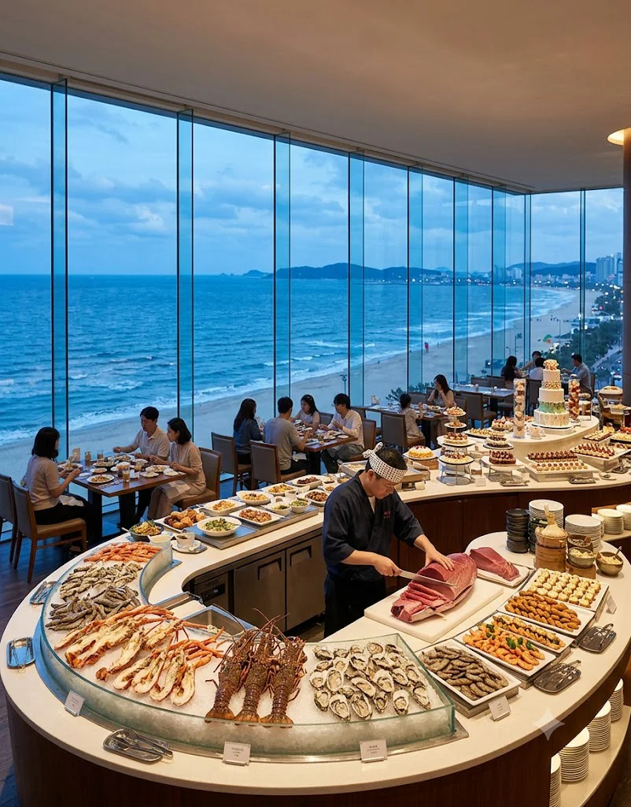
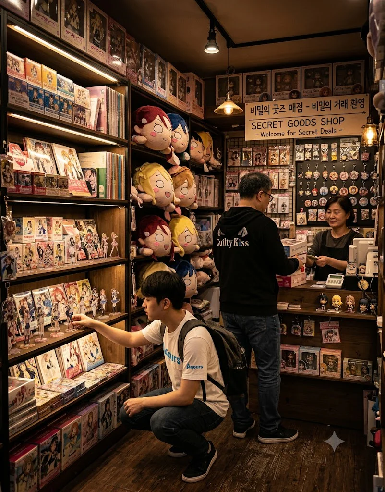

효빈 하라오호텔(Hyobin Harao Hotel)은 효빈광역시 북구 고송동의 초핵심 관광지인 토모리해수욕장 바로 정면에 우뚝 솟아 있는 20층 규모의 초호화 5성급(★★★★★) 호텔이다. 동구대 경영학과 재학생이자 당가동 어벤져스의 금수저 멤버인 오하리의 할아버지(창업주)가 설립하여 현재까지 가업으로 굳건히 이어져 내려온 (주)하라오 홀딩스의 본진격 숙박 시설이다.
고송동 해안가 최고의 노른자위 땅을 선점한 덕분에, 건물을 곡선형으로 영리하게 설계하여 225개의 전 객실에서 푸른 토모리 바다가 한눈에 내려다보이는 미친 100% 오션뷰를 자랑한다. 게다가 호텔 정문을 나서면 바로 앞이 효빈 3호선 토모리해수욕장역이고, 이 3호선을 타면 환승 없이 단 10분 만에 효빈국제공항까지 다이렉트로 금방 꽂힌다. 이 사기적인 입지 덕분에 다음 날 아침 귀국 비행기를 타야 하는 외국인 관광객들과 글로벌 바이어들의 절대적인 필수 숙박 코스로 자리 잡아, 1년 365일 내내 장사가 정말 징그럽게 잘 되는 효빈시 북구 최고의 알짜배기 랜드마크 호텔이다.
외국인 전용 카지노, 대규모 국제회의장, 럭셔리 스파 시설을 모두 갖춘 매머드급 시설임에도 불구하고, 5성급 특급 호텔치고는 숙박비나 내부에 입점한 6개의 레스토랑 F&B(식음료) 가격이 생각보다 엄청나게 비싸지 않은 '갓성비 5성급'으로 정평이 나 있다. 그 혜자로운 가격을 수십 년째 유지할 수 있는 비밀 뒤에는 '노블레스 오블리주'를 몸소 실천한 창업주 할아버지의 굳건한 철학과, 지하 1층에서 호텔 전체 유지비를 하드캐리(?)한다는 무시무시한 '러브라이브 한정판 굿즈 매점'의 존재가 은밀하게 숨어 있다.[3]
호텔 이름이 '하라오(Harao)'이다 보니, 효빈시를 처음 방문하는 관광객 열에 아홉은 이집트의 '파라오(Pharaoh)'를 잘못 발음하거나 잘못 들은 것으로 오해한다. 이 때문에 택시 기사들이 멀쩡한 5성급 호텔을 놔두고, 북구 외곽의 허름한 이집트 컨셉 모텔촌으로 손님을 던져놓고 가는 웃지 못할 해프닝이 매년 발생한다. 심지어 오하리의 대학 동기들조차 처음 그녀의 집안 배경을 들었을 때 "너네 집 이집트 미라 컨셉 모텔 해?"라고 물어봤을 정도로 오해를 샀다.
반면, 서브컬처 팬들은 이 영문 간판(HARAO)을 보고 "오하라(Ohara) 마리의 성씨를 거꾸로 뒤집은 하라오(Harao) 아니냐! 오하리 가문이 대놓고 노렸다!"라며 합리적 의심과 환호를 보낸다. 하지만 놀랍게도 이 호텔의 정식 개관일은 무려 1987년 5월 5일이다. 1987년 당시엔 러브라이브 선샤인 프로젝트는커녕 인터넷도 제대로 없던 시절이므로, 이는 철저하고도 완벽한 '우주가 점지해 준 기적의 우연의 일치'다. 창업주인 오하리의 할아버지가 "하루를 아름답게 오롯이 보내라"는 순우리말의 앞 글자를 따서 지은 매우 심오하고 아름다운 이름인데, 수십 년 뒤 손녀딸의 도플갱어 캐릭터 이름이 거울처럼 완벽하게 거꾸로 겹쳐버린 것이다.
하라오 호텔이 단순한 졸부 기업이 아니라 지역민들에게 절대적인 지지와 존경을 받는 랜드마크로 성장한 바탕에는 창업주(오하리의 할아버지)의 헌신적인 '노블레스 오블리주(Noblesse Oblige)' 실천이 있었다.
1990년대 후반, 효빈시 북구 해안가를 완벽하게 박살 낸 역대급 초강력 태풍이 토모리 해수욕장을 정면으로 덮쳤다. 집채만 한 파도가 해안 도로를 넘어오고 전신주가 쓰러져 지하철마저 끊기면서, 피서를 왔던 관광객 수백 명과 저지대 동네 주민들이 오도 가도 못하고 고립되는 절체절명의 위기 상황이 발생했다.
당시 호텔의 총수였던 할아버지는 임원들의 거센 만류(최고급 대리석과 카펫이 망가진다는 이유)에도 불구하고 지팡이를 내리치며 일갈했다. "돈은 나중에 다시 벌면 된다! 사람이 죽게 생겼는데 대리석 쪼가리가 문제냐! 지금 당장 1층 로비와 4, 5층 그랜드 컨퍼런스 홀 카펫 다 걷어내고 따뜻한 모포 1,000장 깔아라! 정문 다 열어제껴! 그리고 총주방장 당장 불러서 주방 냉동고에 있는 뷔페용 최고급 식자재 아끼지 말고 다 털어서 이재민들 덜덜 떨지 않게 먹여라!"라는 영화에서나 나올 법한 미친 결단을 내렸다.[4]
그날 밤, 물에 빠진 생쥐 꼴로 고립되었던 수백 명의 피서객들은 5성급 호텔의 눈부신 스와로브스키 크리스탈 샹들리에 아래 모포를 덮고 누워, 호텔 수석 셰프가 철판에서 직접 버터로 구워주는 랍스터와 1++ 한우 전복 스테이크를 무료 배급(?) 식사로 받아먹으며 폭풍 감동의 눈물을 펑펑 흘렸다. 이 대인배적이고 압도적인 자선 조치 덕분에 하라오 호텔은 효빈 시민들에게 '영원히 절대 까면 안 되는 착한 갓(God) 기업'으로 뇌리에 완벽하게 각인되었고, 이후 어떠한 악재나 대기업 프랜차이즈의 공세에도 흔들리지 않는 굳건한 5성급 독자 랜드마크로 자리 잡게 되었다. 오하리 역시 할아버지의 이런 낭만적이고 통 큰 기질을 그대로 물려받아, 친구들에게 아낌없이 돈을 쓰는 쾌활하고 쿨한 성격을 가지게 된 것이다.
북구 고송동의 핫플레이스인 토모리해수욕장 1.2km 해안선 정중앙에 떡하니 위치해 있어, 해수욕을 즐기는 관광객들이 수영복을 입은 채로 횡단보도 하나만 건너면 바로 호텔 로비로 진입할 수 있는 미친 입지다. 하라오 호텔은 단순히 잠만 자는 곳이 아니라, 그 안에서 모든 유흥과 비즈니스, 스파, 그리고 힐링이 완벽하게 끝나는 '도심 속의 완벽한 리조트 타워'로 설계되었다. 지하 4층부터 지상 20층까지 꽉꽉 채워진 10대 핵심 인프라를 낱낱이 파헤쳐보자.
무거운 회전문을 열고 들어서는 순간 압도적인 자본의 냄새와 고급스러운 시그니처 시트러스 향이 진동한다. 바닥은 이탈리아 베로나에서 직수입한 최고급 천연 화이트 대리석으로 깔려 있으며, 천장에는 무려 5m 길이의 거대한 스와로브스키 크리스탈 샹들리에가 영롱하게 빛나고 있다. 낮에는 클래식하고 우아한 특급 호텔의 정석을 보여주지만, 밤이 되면 샹들리에와 간접 조명이 오하리 가문의 상징색인 은은한 '샤이니 퍼플'과 '골드' 색상으로 변환되어 굉장히 몽환적이고 힙한 라운지 분위기를 연출한다. 5개 국어(한국어, 영어, 일본어, 중국어, 아랍어)에 능통한 컨시어지들이 항시 대기하며 문 앞부터 짐을 받아준다.
3층 전체 800평 규모를 통째로 사용하는 화려한 내국인 출입 금지 카지노. 효빈국제공항과 3호선으로 다이렉트 연결되는 사기적인 교통망 덕분에, 출국 전날 마지막으로 달러와 엔화를 탕진하려는 중국, 일본 부호 관광객들로 밤마다 불야성을 이룬다. 50대의 바카라, 블랙잭, 룰렛 테이블과 300대의 최신형 슬롯머신이 쉴 새 없이 칩 부딪히는 소리와 잭팟 팡파르를 울려 댄다. 보안이 철저한 프라이빗 VIP 룸에서는 하룻밤에 수억 단위의 판돈이 오간다. 재미있는 디테일은, 카지노 딜러들의 나비넥타이와 고액 칩의 메인 컬러가 교묘하게 '마리의 상징색인 보라색과 골드'로 통일되어 있다는 점이다. 여기서 벌어들이는 어마어마한 외화 수입이 호텔 전체 유지비의 큰 축을 담당한다.
4층과 5층을 아우르는 최첨단 다목적 홀 구역. 1,500석 규모의 메인 그랜드 볼룸은 층고가 무려 8m에 달하며, 기둥 하나 없이 시야가 뻥 뚫려 있다. 천장에는 수만 개의 크리스탈이 박힌 샹들리에가 은하수처럼 빛나고, 전면에는 300인치 4K LED 미디어월이 3면으로 둘러싸여 있어 압도적인 시각적 몰입감을 제공한다. 8개국어 동시통역 부스 시스템과 방송국 급의 음향 컨트롤 룸이 완비되어 있어, 평소에는 G20급 국제 포럼, 의학 학술대회, 대기업 신차 런칭 행사가 열리는 엄숙한 곳이다. 하지만 매년 여름 '효빈 애니메이션 페스티벌(HAF)' 시즌이 되면 이 럭셔리한 샹들리에 아래서 완전히 다른 세상이 펼쳐진다. 유명 일본 성우들의 내한 팬미팅, VIP 리셉션, 그리고 대규모 코스어들의 전야제 파티가 열리는 기괴하고도 화려한 서브컬처 성지로 둔갑한다. 특히 라이브 뷰잉 행사가 열릴 때는 1,500명의 덕후들이 일제히 쏘아 올리는 야광봉 불빛으로 샹들리에 조명이 무색해질 정도다.
비행과 피로에 찌든 비즈니스맨과 하루 종일 걸어 다닌 성지순례객들의 피로를 완벽하게 씻어주는 700평 규모의 최고급 스파 존. 지하에 있지만 구조적으로 선큰(Sunken) 가든 설계를 통해 자연 채광이 들어오게 만들어져 있다. 따뜻한 35도 온수풀에서 통유리창 너머로 토모리 해변의 일몰을 감상할 수 있는 실내 인피니티 풀이 예술이다. 이 스파의 시그니처 마사지는 '샤이니 펄(Pearl) 테라피'로, 진짜 미세한 진주 가루를 섞은 스크럽으로 전신 마사지를 해 피부를 깐달걀처럼 만들어준다. 스파 풀 옆에는 편백나무 향이 진동하는 일본식 정통 히노끼 사우나와 냉탕이 있어 땀을 쫙 뺄 수 있다.
호텔 6층 전면을 통째로 차지한 하이엔드 피트니스 센터. 모든 런닝머신(트레드밀)과 웨이트 기구는 대당 수천만 원을 호가하는 이탈리아 명품 브랜드 '테크노짐(Technogym)'의 최고급 아티스(ARTIS) 라인으로 도배되어 있다. 런닝머신 위를 뛰면서 창밖으로 토모리 해수욕장 모래사장에서 펭귄 튜브를 타고 노는 펭귄족(?)들을 실시간으로 구경할 수 있는 묘하고도 완벽한 뷰를 자랑한다. 투숙객 전용 프라이빗 1:1 필라테스 기구 룸과 릴랙스 요가 스튜디오도 갖추고 있어 오운완(오늘 운동 완료) 인증샷의 성지다.
호텔의 최상층 야외에 위치한, 바다와 하늘이 완벽하게 맞닿은 듯한 착시를 주는 길이 30m짜리 온수 인피니티 풀. 투숙객 중에서도 '성인' 전용으로만 프라이빗하게 운영되며, 푹신한 대형 카바나와 선베드가 선착순 무료로 제공된다. 낮에는 인스타그래머들의 비키니 인증샷 성지지만, 여름밤 8시가 되면 풀사이드에 대형 DJ 부스가 설치되고 보라색 레이저 조명이 밤하늘로 쏘아지며, 비키니와 래시가드를 입은 투숙객들이 샴페인과 칵테일을 들고 춤을 추는 화려한 힙합/EDM 풀파티장으로 완벽하게 변모한다.
하라오 호텔은 건물을 영리한 Y자 곡선형으로 설계하여, 225개 전 객실에서 사각지대 없이 토모리 바다의 일출이나 일몰을 감상할 수 있는 100% 완벽한 오션뷰를 보장한다. 가장 저렴한 스탠다드 디럭스룸조차 12평의 널찍한 크기와 킹사이즈 베드 2개를 갖추어 타 비즈니스 호텔의 스위트룸에 필적하는 개방감을 준다. 구스다운 100%의 최상급 거위털 침구류와 함께, 객실 내 욕실 어메니티는 모두 조말론(Jo Malone)이나 딥티크(Diptyque) 대용량 디스펜서로 세팅되어 투숙객의 후각을 만족시킨다. 전 객실 침대 옆에 다국어 지원 AI 음성 비서 패드가 설치되어 있어 "헤이, 커튼 열어줘" 한마디로 자동 암막 커튼과 조명을 조절할 수 있다.
원래 하루 숙박비 250만 원을 호가하던 최상층의 최고급 프레지덴셜 스위트룸이었던 곳을, 손녀딸 오하리의 강력한 입김(?)과 "아빠, 내 테마 방 하나쯤은 있어야지 큥!"이라는 생떼가 작용하여 '오하라 마리' 테마로 완벽하게 마개조해 버린 전설의 객실이다. 문을 여는 순간, 눈이 부신 보라색과 황금색의 찬란한 '샤이니' 인테리어가 펼쳐진다. 거실 중앙에는 수천만 원짜리 리얼 금박 샹들리에가 달려 있고, 벽면 전체에는 마리의 고해상도 일러스트가 거대한 액자로 걸려 있다. 심지어 거실 한가운데에는 오하라 마리 1:1 실물대 피규어가 세워져 있고, 킹사이즈 침대 위에는 사람만 한 테라 점보 네소베리가 떡하니 누워 투숙객을 반긴다. 웰컴 푸드로 보라색 마카롱과 기괴한 '샤이니 스튜 젤리(?)'가 제공되며, 일본에서 굿즈 원정을 온 부유한 러브라이버들의 예약 1순위 타겟으로 반년 치 주말 예약이 꽉 차 있다.
아이를 동반한 가족 투숙객을 위해 2층 전체에 마련된 300평 규모의 프리미엄 유아용 놀이방. 모든 자재가 친환경 자재로 지어졌으며, 대형 볼풀장, 미끄럼틀, 레고 블록 존이 있다. 단순히 시설만 있는 것이 아니라, 보육교사 자격증을 가진 전문 스태프가 상주하여 아이들을 안전하게 돌봐준다. 부모들은 안심하고 아이를 맡긴 뒤, 3층 카지노로 돈을 쓰러 가거나 지하 스파를 즐기러 가는 완벽한 '부모 해방 사육 시스템'이 구축되어 있어 맘카페에서 찬양을 받는다.
내국인이라 카지노 출입이 안 되거나, 조용히 자기들만의 유흥을 즐기고 싶은 투숙객을 위한 지하 놀이터. 완벽한 3중 방음 부스가 시공된 15개의 프라이빗 코인 노래방 룸이 있으며, 전 객실에 일본 JOYSOUND 기기가 완비되어 있어 애니송과 보컬로이드 곡이 가득하다. 최신형 다트 게임기, 포켓볼 다이, 그리고 소규모 칵테일 바가 마련되어 있다. 술에 취한 넥타이 부대 회사원들과 굿즈 쇼핑을 마친 오타쿠들이 한데 섞여서, 각자의 방에서 핏대를 세우며 광란의 밤을 보내는 진풍경이 벌어지는 곳이다.
하라오 호텔이 투숙객 밖의 일반 시민들에게도 폭발적으로 사랑받는 결정적 이유는, 호텔 내부에 촘촘하게 박혀 있는 6개의 미친 퀄리티 프리미엄 레스토랑 때문이다. 각 식당의 이름은 할아버지가 1980년대 개관 당시 지은 정통성 있고 우아한 이름이지만, 공교롭게도 이 이름들이 수십 년 뒤 전부 특정 서브컬처 유닛들이나 캐릭터 밈을 완벽하게 연상케 하여 덕후들에게 또 다른 성지순례 먹방 코스로 찬양받고 있다.

하라오 호텔은 이 엄청난 5성급 인프라와 6개의 최고급 레스토랑, 225개의 럭셔리 객실을 굴리면서도, 숙박비와 밥값이 타 5성급 특급 호텔(서울 신라호텔, 롯데 시그니엘 등)에 비해 약 20~30% 저렴한 '파격적인 혜자 가성비'를 수십 년째 유지하고 있다. 이 엄청난 고정 지출을 감당하면서도 어떻게 매달 압도적인 이윤이 남는 걸까?

호텔 업계 임원들과 효빈시 호사가들 사이에서 떠도는 전설적이고도 소름 돋는 소문에 따르면, 이 5성급 호텔의 진정한 캐시카우(현금 창출원)는 화려한 객실이나 3층 외국인 카지노가 아니었다. 진짜 돈줄은 바로 호텔 지하 1층 아케이드 구석에 박혀 있는, 창문 하나 없는 30평 남짓한 '서브컬처(러브라이브) 한정판 굿즈 매점'이라고 한다.
이 매점은 겉보기엔 그저 잡지를 파는 허름한 호텔 구석 편의점처럼 생겼으나, 안으로 들어가면 일본 누마즈나 아키하바라 뒷골목에서도 프리미엄을 주고 구하기 힘든 초희귀 절판 굿즈, 오하라 마리 생일 한정 특전 일러스트 보드, 사람만 한 테라 점보 네소베리, 멤버별 친필 사인 캔뱃지 등을 천장까지 산더미처럼 쌓아놓고 정가(혹은 그 이상)에 판다. 오하리 가문의 끈질긴 자본주의 인맥으로 일본 현지에서 직수입 루트를 뚫어 재고를 미친 듯이 조달하는 것이다.
성지순례를 온 전 세계의 극성 덕후들이 이 호텔에 투숙하며 밤마다, 혹은 체크아웃하기 전 지하로 내려와 이성의 끈을 놓고 한 사람당 수십, 수백만 원어치 굿즈를 현찰과 신용카드로 눈물을 흘리며 쓸어 담아 가는 미친 광경이 매일 아침 펼쳐진다. 1층 로비 밖에는 굿즈 박스를 양손 가득 들고 택시를 타는 오타쿠들을 흔히 볼 수 있다.
오하리는 어느 날 대학 동기들(어벤져스)과 20층 뷔페에서 샴페인을 마시다가 취기가 올라, "솔직히 우리 호텔 에어컨 하루 종일 빵빵하게 트는 전기세랑 레스토랑에서 퍼주는 랍스터 식자재 적자 나는 거? 그거 다 뻥이야 큥! 지하 1층 굿즈 매점에서 덕후 오빠들이 묻지도 따지지도 않고 긁어주는 캔뱃지 가챠 수익이랑 네소베리 마진으로 다 100% 메우고도 남아서 굳이 객실 가격을 안 올리는 거야 큥~ 이게 바로 자본주의의 진정한 연금술이지 ㅋㅋㅋ"라고 대놓고 1급 영업 비밀을 폭로한 바 있다. 이른바 '굿즈를 팔아 5성급 호텔을 지탱하는 기적의 오타쿠 수익 구조'인 셈이다.
5성급 호텔의 우아함과 엄숙함을 단숨에 산산조각 내버리는, 오하리와 주변 어벤져스 인물들의 영화보다 더 미친 꿀잼 기행 7가지를 낱낱이 파헤쳐보자. 각 사건들은 스케일과 디테일에서 타의 추종을 불허한다.
오하리가 고등학생이던 시절, 타 지역에서 효빈으로 놀러 온 소중한 중학교 단짝 친구들을 자신의 호텔로 부르려 효빈역에서 택시를 잡아주었다. 그런데 귀가 어둡고 고급 호텔 이름이 생소했던 택시 기사님이 "아하, 파라오(Pharaoh) 모텔! 거 으슥한 데 이집트 스핑크스 벽화 그려져 있는 데지? 알지 알지!"라며 아이들을 북구 외곽의 무섭고 낡은 모텔촌 한가운데로 던져놓고 가는 대참사가 발생했다.
길을 잃고 덩치 큰 아저씨들에 둘러싸여 무서움에 떨던 친구들이 울면서 전화를 걸어오자, 전말을 파악하고 극대노한 오하리는 다음 날 아침 교복을 입은 채 할아버지(창업주)의 마호가니 원목 책상이 있는 회장 집무실로 문을 박차고 쳐들어갔다. "할부지!! 내 친구들이 어제 이집트 미라 될 뻔했잖아!! 택시 기사들이 우리 5성급 호텔을 똥통 모텔이랑 헷갈린다고!! 당장 오늘 당장!! 호텔 옥상에 H.A.R.A.O 글씨 대문짝만하게 안 박아 놓으면 나 할부지 책상 발로 차고 가출해서 안 들어올 거야 캉캉!!"이라며 바닥에 드러누워 발버둥을 치며 뗑깡을 부렸다.
눈에 넣어도 안 아픈 손녀 바보였던 할아버지는 껄껄 웃으며 그 즉시 긴급 이사회를 소집했다. 할아버지는 수억 원의 현찰과 30톤짜리 초대형 헬기 크레인을 동원하여, 한 달 만에 호텔 20층 옥상 정중앙에 밤바다를 10km 밖에서도 환하게 비추는 영롱한 보라색 'HARAO' 초거대 LED 네온사인 간판을 보란 듯이 세워버렸다. 덕분에 요즘은 효빈 앞바다로 새벽 조업을 나가는 오징어잡이 어선들이, 항구의 등대 불빛 대신 하라오 간판의 보라색 불빛을 보고 무사히 길을 찾아 돌아온다는 전설적인 실화가 생겼다.
동구대 경영학과 1학기 지옥의 회계원리 중간고사가 무사히 끝난 날, 오하리가 "오늘 밤새워 고생한 불쌍한 서민 중생들에게 이 영애님이 하라오 최고급 뷔페를 하사하마 큥!"이라며 단짝 3인방과 당가동 어벤져스 멤버들을 20층 '샤이니 오션' 뷔페로 몽땅 소집했다. 1인당 15만 원짜리 최고급 시푸드 뷔페를 지갑도 안 꺼내고 영수증에 자기 사인 하나 쓱 휘갈기며 프리패스로 통과시키는 진짜 금수저의 플렉스를 보여주어 친구들의 열렬한 환호를 받았다.
하지만 문제는 식욕의 통제력을 완전히 상실한 피지컬 근육 괴물 송과영이었다. 뷔페에 입장하기 전 피트니스에서 100kg 바벨 스쿼트 500개를 조지고 와서 극도로 허기가 진 과영은 "오, 오늘 하체 운동 조졌는데 단백질 보충 좀 빡세게 해볼까"라며 집게를 들었다. 그녀는 무려 얼굴만 한 2kg짜리 바닷가재(랍스터) 버터구이 20마리, 광어와 연어 초밥 80피스, 참기름을 두른 전복 구이 3접시를 혼자서 거대한 접시에 탑처럼 쌓아와 진공청소기처럼 껍질째 씹어 빨아들였다.
단 30분 만에 뷔페 해산물 메인 코너가 메뚜기 떼가 지나간 듯 완벽하게 거덜 나버렸다. 뒤늦게 해산물을 가지러 온 다른 외국인 투숙객들이 텅 빈 얼음 매대를 보고 황당해하며 "Where is my lobster?!"라고 항의하자, F&B 지배인이 사색이 되어 뛰어다니다 오하리에게 다가와 귓속말을 했다. "아가씨... 저 친구 분 때문에 스시 쥐던 셰프님이 손에 쥐가 나서 쓰러지셨습니다..." 오하리는 이마를 짚으며 "미... 미친 돌고래 근육녀야... 네가 씨푸드 뷔페를 멸망시킬 일 있어 큥?! 그만 좀 쳐먹어!!"라며 과영의 떡 벌어진 등짝을 찰싹 후려쳤다. 결국 지배인은 인근 어간수산시장에 야간 긴급 퀵 발주를 넣어 랍스터를 급하게 추가로 쪄내야만 했던 뷔페 파산(?) 직전의 위기였다.
중2병 말기 환자 진선자가 드디어 스무 살 합법적 성인이 된 기념으로, 3층 외국인 전용 '하라오 카지노'에 기어코 들어가 '도박 묵시록 카이지'의 주인공처럼 일확천금을 땡기겠다며 억지를 부린 사건이다.
진선자는 한여름에 더워 죽겠는데도 두꺼운 검은 깃털 망토를 칭칭 두르고, 카지노 입구를 지키는 2m짜리 덩치 큰 러시아계 외국인 보안 요원 앞을 당당하게 막아섰다. 그녀는 여권 대신 본인이 직접 노트에 크레파스로 그린 '리틀 데몬 타천사 1급 신분증(종이 쪼가리)'을 내밀며 "길을 비켜라, 미천한 닝겐! 나는 국경을 초월한 지옥의 영혼이다! 다크니스의 힘으로 잭팟을 터뜨릴 테니 당장 룰렛 테이블로 나를 안내하라!"라고 무려 3줄짜리 흑마법 영창을 외우며 미친 어그로를 끌었다.
보안 요원이 어이없어하며 무전을 쳐서 경찰을 부르려는 찰나, 마침 로비에서 커피를 마시다 이를 목격한 이리자가 딥빡의 한숨을 쉬며 성큼성큼 다가왔다. 이리자는 보안 요원에게 고개를 깊숙이 숙이며 "Sorry, she is a severe mental patient escaped from our hospital (정말 죄송합니다, 우리 병원 탈출한 중증 정신병 환자입니다)."라고 유창하고 차분한 영어로 사과했다.
그 직후, 뒤돌아서서 헛소리를 계속하는 진선자의 목덜미 미주신경(기절 급소)에 무자비한 '쾌감펀치' 수도 촙을 정확히 날려 단 1초 만에 "기랑...!" 소리와 함께 바닥에 기절시켰다. 이리자는 바닥에 널브러진 진선자의 망토 자락을 쥐고 짐짝처럼 질질 끌며 엘리베이터에 탔고, 보안 요원은 그 완벽한 외과적 제압술에 경의의 기립 박수를 보냈다.
무더운 8월 한여름 피서철, 오하리의 초대로 호텔 바로 앞 토모리해수욕장에서 수영복을 입고 물놀이를 하던 빵순이 하마루. 그녀는 토모리 해변 관광과의 명물인 '거대 펭귄 인형 튜브'에 혼자 쏙 올라타, 튜브 위에서 호텔 베이커리(샤론)에서 훔쳐 온 한정판 메론빵을 우적우적 뜯어먹으며 따뜻한 햇살에 스르륵 낮잠을 자고 있었다.
그러나 하필 그때 서해안의 강한 썰물(조류)이 발생했고, 튜브는 하마루를 태운 채 방파제 저 멀리 해경 통제 구역을 넘어 시커먼 먼바다로 둥둥 떠내려가는 대형 해난 사고를 쳤다. 잠에서 깬 하마루가 주변에 아무도 없는 시퍼런 바다를 보고 패닉에 빠져 "살려줘유 즈라아아!! 나 수영 못해유!!"라며 파리만 한 점으로 멀어지자, 해변에 있던 일행들은 사색이 되어 발칵 뒤집혔다.
이때 해변 파라솔 아래서 치킨을 뜯고 있던 해군 제복 오타쿠 도선요와 스쿠버 다이버 1급 자격증 보유자 송과영이 치킨 무를 뱉고 벌떡 일어났다. 선요는 본인이 해군 함장이라도 된 듯 선원 모자를 고쳐 쓰며 "해양 구조대 전속 전진 요소로!!"를 외치고, 백사장에 정박해 있던 렌탈용 바나나보트 견인 모터보트에 뛰어올라 미친 코너링으로 시동을 걸고 맹렬히 파도를 가르며 돌진했다.
과영은 보트 뱃머리에 늠름하게 서서 물안경을 끼고, 작살(?) 대신 굵은 인명 구조용 튜브 밧줄을 쥐고 투척을 준비했다. 심지어 과영은 보트가 다가가기도 전에 먼저 바다로 다이빙해 모터보트보다 빠른 속도로 헤엄쳐 가는 미친 잠수력을 보여주었다. 이들은 마치 UDT 특수부대 해상 구출 작전처럼 단 5분 만에 먼바다에 도달해, 펭귄 튜브 목을 껴안고 바닷물을 먹어 울고 있는 하마루의 구명조끼 뒷덜미를 짐짝처럼 낚아채어 무사히 호텔 로비로 복귀하는 헐리우드급 액션을 선보였다. 하마루는 로비 바닥에 엎드려 "다시는 바다에서 빵 안 먹을게유 즈라 ㅠㅠ"라며 오열했다.
지하 1층 비밀의 굿즈 매점에 일본에서도 구하기 힘든 초한정판 '오하라 마리 1/4 스케일 바니걸 피규어(전국 10개 한정 입고)'가 입고된 운명의 날. 새벽 5시부터 호텔 복도에 텐트를 치고 밤을 새우며 얌전히 기다리던 선량한 찐팬들 사이로, 불법으로 고용한 알바생 노숙자들을 이끌고 캠핑용 접이식 의자와 쓰레기를 바리바리 싸 들고 온 전문 굿즈 리셀러(되팔이) 일당 5명이 나타났다. 그들은 덩치를 앞세워 무력으로 새치기를 하며 진열대의 물건을 박스째로 싹쓸이 카트에 담으려 들었다. 매점 직원이 막아서며 쩔쩔매고, 뒤에 서 있던 덕후들이 분노하여 멱살을 잡기 일보 직전인 폭동 상황이었다.
이때, 호텔 조식을 먹고 소화 겸 에스컬레이터를 타고 내려온 로스쿨생이자 어벤져스 법적 처형인 석다연이 5성급 호텔 가운을 걸친 채 아이스 아메리카노 컵을 들고 유유히 나타났다. 그녀는 리셀러 우두머리의 앞을 딱 가로막고, 서늘한 눈빛으로 입가의 점을 씰룩이며 말했다.
"아저씨들. 지금 다수결의 위력을 과시하며 정당한 대기열을 무시한 행위는 형법 제314조 업무방해죄 및 제319조 건조물침입죄에 해당하며, 시세 차익이라는 부당이득을 목적으로 한 조직적 매점매석 사재기 행위는 '특정경제범죄 가중처벌 등에 관한 법률'을 들먹이지 않더라도 현행범 체포 요건을 아주 교과서적으로 완벽히 충족하네요. 이 호텔 옥상 펜트하우스에 지금 오하리 이사님 전담 대형 로펌 법무팀이 아침 회의 중인데 다이렉트로 콜 때려 드릴까요? 10초 안에 그 카트 박스 고스란히 내려놓고 가져온 쓰레기 다 치워서 쥐새끼처럼 비상구로 도망갈래요, 아니면 영업방해 손해배상 청구액 5천만 원 민사소송장 맞고 뿟뿌 데스와(법의 심판) 당할래요?"
다연의 살벌한 안광과 숨 막히는 법 조항 속사포 논리 폭격에 영혼까지 털려버린 리셀러들은, 들고 있던 피규어 박스를 바닥에 내팽개치고 오줌을 지릴 뻔하며 비상계단으로 우르르 도망쳤다. 밤새 기다리던 오타쿠들은 다연을 진정한 구원의 여신으로 추앙하며 홍해처럼 길을 터주었고, 다연은 유유히 피규어 1개를 정가로 카드 결제하고 방으로 올라갔다.
오하리가 갓 초등학교에 입학했던 1990년대 후반 늦여름, 효빈 북구 해안가를 완벽하게 박살 낸 '매미'급 초강력 태풍이 토모리 해수욕장을 정면으로 덮쳤다. 집채만 한 파도가 해안 도로를 넘어오고 전신주가 쓰러져 지하철이 끊기면서, 피서를 왔던 관광객 수백 명과 저지대 동네 주민들이 오도 가도 못하고 고립되는 절체절명의 국가적 위기 상황이 발생했다.
당시 호텔의 총수였던 할아버지(창업주)는 즉각 비상 대책 회의를 소집하더니, 이탈리아산 최고급 대리석이 망가지고 카펫이 젖는다며 결사 반대하며 만류하는 임원들을 향해 지팡이를 '쾅!' 내리치며 호통을 쳤다.
"돈은 나중에 다시 벌면 된다! 사람이 물에 빠져 죽게 생겼는데 대리석 쪼가리가 문제냐! 지금 당장 1층 로비와 4, 5층 그랜드 컨퍼런스 홀 카펫 다 걷어내고 따뜻한 모포 1,000장 깔아라! 정문 다 열어제껴! 그리고 총주방장 당장 불러서 주방 냉동고에 있는 뷔페용 최고급 식자재 아끼지 말고 다 털어서 이재민들 덜덜 떨지 않게 따뜻하게 먹여라!"라는 재난 영화에서나 나올 법한 미친 대인배적 결단을 내렸다.
그날 밤, 물에 빠진 생쥐 꼴로 고립되었던 수백 명의 피서객들은 5성급 호텔의 눈부신 스와로브스키 크리스탈 샹들리에 아래 따뜻한 모포를 덮고 누워, 호텔 수석 셰프가 철판에서 직접 버터로 구워주는 랍스터 구이와 1++ 한우 전복 스테이크를 평생 잊지 못할 무료 배급(?) 식사로 받아먹으며 폭풍 감동의 눈물을 펑펑 흘렸다. 이 압도적인 자선 조치 덕분에 하라오 호텔은 효빈 시민들에게 '영원히 절대 까면 안 되는 착한 갓(God) 향토 기업'으로 뇌리에 완벽하게 각인되었고, 이후 어떠한 대기업 프랜차이즈의 공세에도 흔들리지 않는 굳건한 5성급 독자 랜드마크로 자리 잡게 되었다.
어벤져스 멤버들 전원이 최상층 '오하라 마리 테마 스위트룸'에 모여 밤샘 파자마 파티와 블루레이 상영회를 하던 날. 새벽 2시, 수다를 떨다 배가 고파진 멤버들을 위해 오하리가 4만 5천 원짜리 룸서비스 '샤이니 미드나잇 세트(수제 마카롱 6구+포트넘 앤 메이슨 최고급 홍차)'를 내선 전화로 시켰다.
그런데 달달한 단당류에 중독된 오하리와, 아무리 먹어도 먹어도 배가 안 차는 대식가 송과영의 폭주가 시작되었다. 세트가 도착한 지 5분 만에 싹 비워버린 그들은, "하나 더! 아니 두 개 더 줘!"를 외치며 무려 세트를 10번이나 연속으로 룸서비스 인터폰을 갈겨 재주문하는 미친 진상 짓을 벌였다. 5성급 호텔 룸서비스 역사상 유례없는 디저트 폭격이었다.
결국 새벽 4시경, 다크서클이 턱까지 내려와 지칠 대로 지친 룸서비스 직원이 은쟁반 카트를 끌고 10번째 스위트룸 문을 열고 들어와 털썩 무릎을 꿇고 애원했다. "아가씨... 제발 그만 시켜주세요... 지금 지하 1층 주방 파티시에 수석 셰프님이 퇴근도 못 하고 울면서 마카롱 꼬끄 반죽을 치대다가 과로로 쌍코피가 뚝뚝 떨어지셨습니다 ㅠㅠ 프랑스산 고급 버터도 재고가 다 떨어졌어요..."
그 참혹한 몰골의 직원을 본 오하리는 그제야 사태의 심각성을 파악하고 "오 마이 갓! 아임 쏘 쏘리!! 셰프님 코피 나게 해서 내가 미안해 큥!! 당장 주문 스톱하고, 셰프님이랑 직원분 계좌 번호 불러! 특별 보너스 100만 원씩 지금 당장 사비 폰뱅킹으로 넣어드릴게 큥!!"이라며 쿨하게 사과하고 야간 주방 털이를 멈추었다. 실제로 100만 원 보너스가 새벽에 즉시 입금되자 직원들은 만세를 불렀고, 이 사건은 아직도 호텔 F&B 직원들 사이에서 악명 높지만 달달한 '스위트룸 10연속 마카롱 싹쓸이 폭파 사건'으로 회자되며, 오하리가 묵는 날엔 주방에서 미리 셰프들이 몬스터 에너지를 마시고 버터를 산더미처럼 준비해 놓는다고 한다.